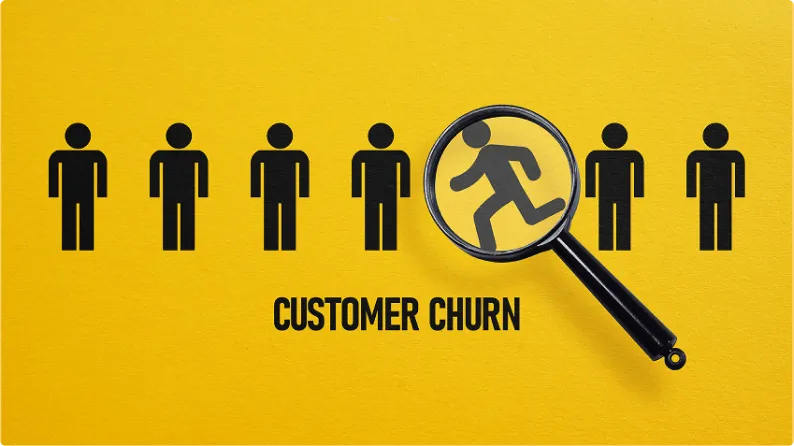

Projects

Sales Performance Dashboard
Interactive Power BI dashboard analyzing regional sales performance, product profitability and customer segmentation.

Customer Churn Analysis
Exploratory data analysis using Python and Pandas to identify patterns driving customer churn and improve retention strategies.

Retail Sales Analysis
SQL and Excel based analysis uncovering sales trends, top performing products and revenue insights across regions.